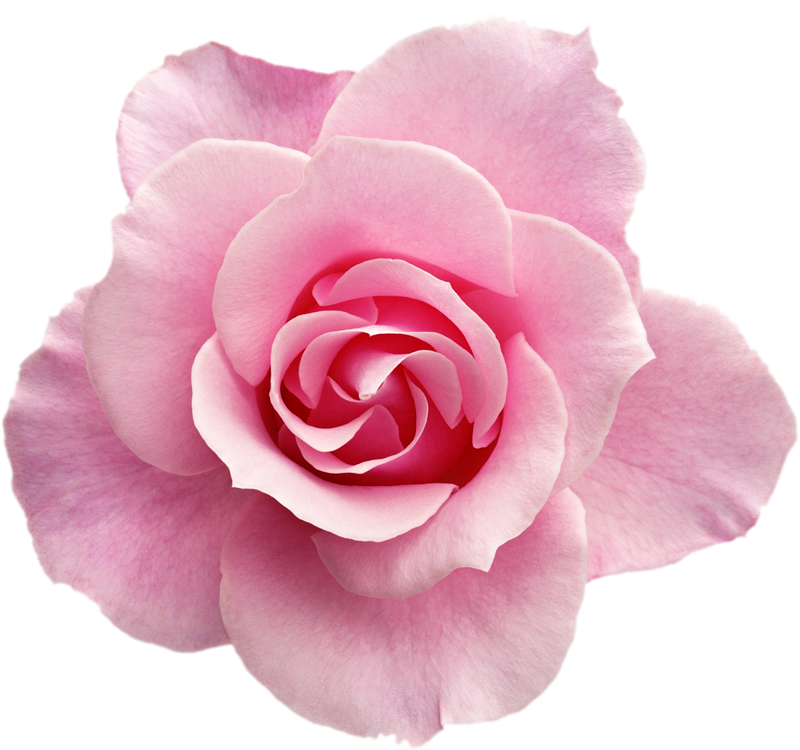

Tu navegador no soporta la etiqueta de audio.
Tu navegador no soporta la etiqueta de video.
Después de conocernos
y vivir la experiencia más
linda que te regala Dios...

Estamos listos para ser
más felices y caminar siempre
juntos de la mano. Por eso
queremos contarte que...
¡Nos Casamos!